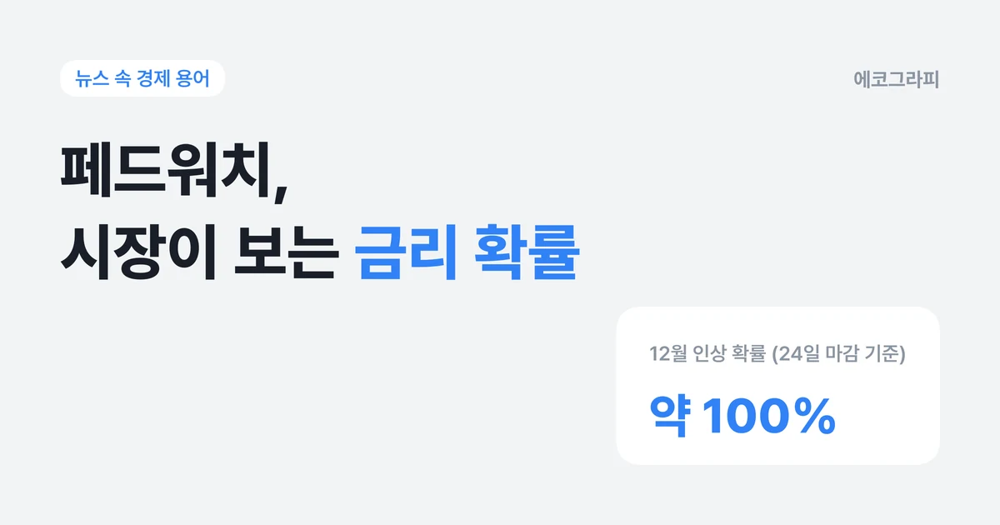
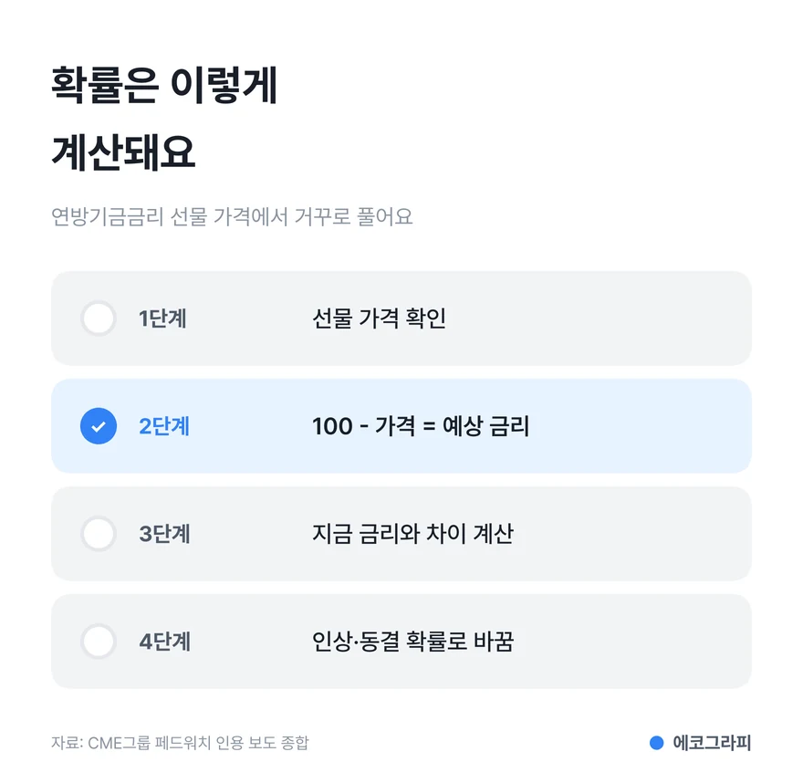
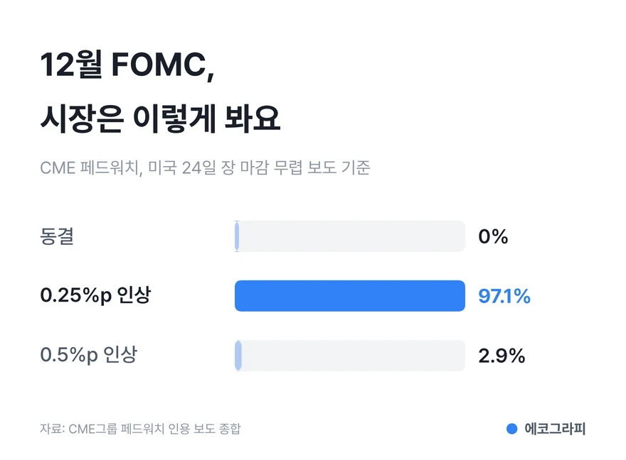
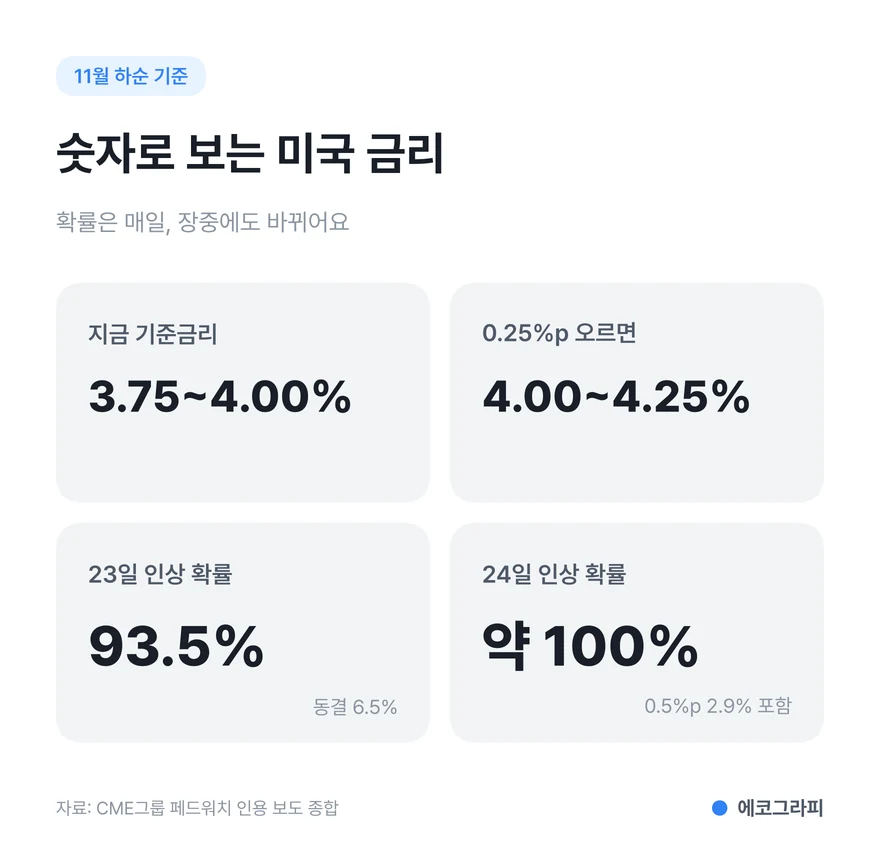
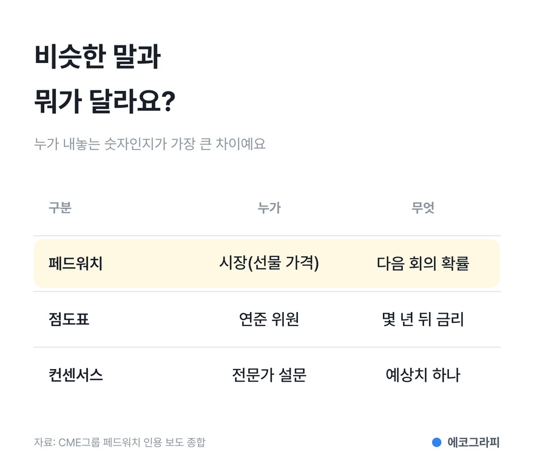

간밤 뉴욕 증시 기사마다 "CME 페드워치에 따르면 12월 금리 인상 확률이 100%"라는 문장이 붙었어요. 11월 소비자신뢰지수가 크게 오르자 금리 인상 기대가 더 굳어졌다는 설명이에요. 어제 시장 흐름은 오늘 아침 시황에 정리했어요.
페드워치(FedWatch): 'Fed(연준)를 지켜본다'는 이름 그대로, 선물 시장 가격에 담긴 금리 기대를 확률로 바꿔 보여 주는 CME그룹의 무료 도구예요.
원리는 '연방기금금리 선물'이에요. 이 선물은 100에서 그달 평균 기준금리를 뺀 값으로 가격이 매겨져요. 예를 들어 시장이 평균 금리를 4%로 본다면 가격은 96 근처에서 거래돼요.

그래서 선물 가격을 보면 시장이 예상하는 금리를 거꾸로 알 수 있어요. 이 예상 금리가 지금 금리보다 얼마나 높은지(또는 낮은지)를 따져서 "올릴 확률 몇 %, 그대로 둘 확률 몇 %"로 바꾸는 게 페드워치예요. 가격이 실시간으로 움직이니 확률도 장중에 계속 바뀌어요.


매체마다 확률이 97%, 98%, 100%처럼 조금씩 다르게 나오는 건, 확인한 시각이 다르기 때문이에요. 페드워치는 '언제 본 숫자인지'를 함께 봐야 해요.
확인할 것: 뉴스에 페드워치 숫자가 나오면 어느 회의의 확률인지, 언제 기준인지를 먼저 보세요. 변동금리 대출이 있다면 다음 금리 변경일과 기준이 되는 금리를 은행 앱에서 확인해 두면 좋아요.

점도표는 연준 위원들이 각자 생각하는 앞으로의 금리를 점으로 찍은 표예요. 연준 '안'의 생각이에요. 페드워치는 돈을 건 시장 '밖'의 생각이고요. 둘이 다르면 시장과 연준이 어긋나 있다는 뜻이라, 회의 뒤 가격이 크게 움직이기도 해요.
아니에요. 지금 시점 시장 가격에 담긴 기대일 뿐이에요. 회의 전에 물가·고용 지표가 바뀌면 확률도 빠르게 바뀌어요.
CME그룹 홈페이지의 FedWatch Tool에서 누구나 무료로 볼 수 있어요. 회의별로 금리 구간마다 확률이 나와요.
페드워치처럼 널리 쓰는 공개 도구는 없어요. 대신 국고채 3년물 같은 시장금리나 전문가 설문으로 한은 결정을 가늠해요.
선물 가격이 실시간으로 움직여서 확인한 시각에 따라 숫자가 달라져요. 기사에 적힌 기준 시각을 함께 보세요.
※ 2026년 11월 기준으로 정리한 글입니다. 세율·제도는 바뀔 수 있으니 거래 전 증권사·국세청 안내를 한 번 더 확인하세요. 특정 종목·상품의 매수·매도 권유가 아닙니다.